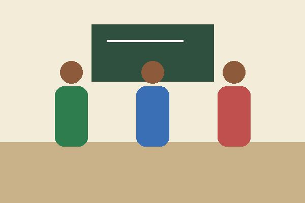
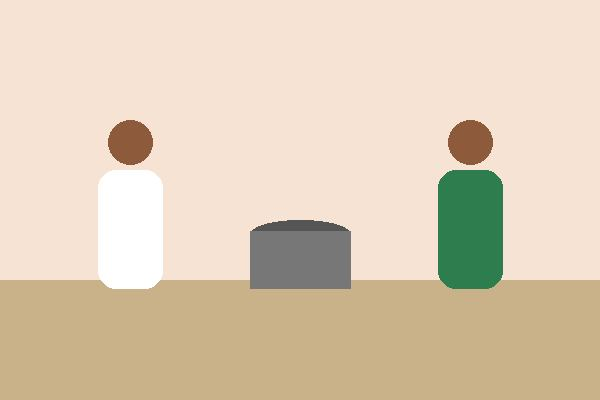

Reforço Escolar Comunitário

Aulas gratuitas de português e matemática para alunos do ensino fundamental.
- 120 alunos atendidos por semestre
- 30 voluntários educadores
Atuamos em três frentes: educação, segurança alimentar e eventos comunitários. Conheça os projetos e escolha como participar.

Aulas gratuitas de português e matemática para alunos do ensino fundamental.

Preparo e distribuição de refeições para famílias em situação de vulnerabilidade.
Arrecadação de cestas básicas para 500 famílias.
Prazo: até .
Compra de kits escolares para os alunos do reforço.
Prazo: até .
| Modalidade | Como doar |
|---|---|
| Pix | Chave: doacoes@maosqueajudam.org.br |
| Transferência | Banco 000, agência 0001, conta 12345-6 |
| Itens | Entrega na sede, de segunda a sexta, das 9h às 18h |